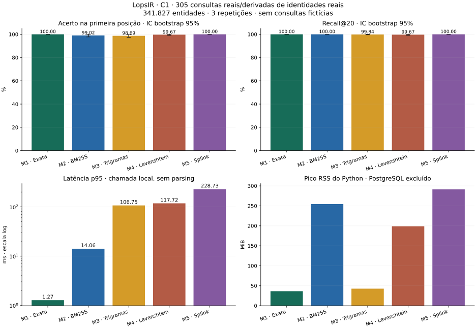
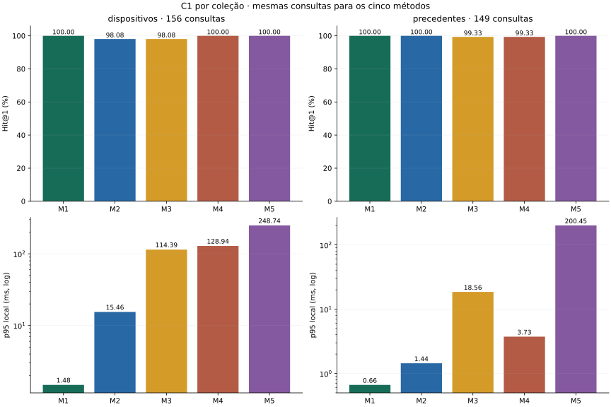

305 consultas · 341.827 entidades reais · 5 métodos · 3 repetições
Referências estruturadas e íntegras. Não mede busca semântica, erros de digitação ou capacidade concorrente.
| Método | Hit@1 | p95 ms |
|---|---|---|
| M1 · Exata | 100.00% | 1.269 |
| M2 · BM25S | 99.02% | 14.055 |
| M3 · Trigramas | 98.69% | 106.745 |
| M4 · Levenshtein | 99.67% | 117.717 |
| M5 · Splink | 100.00% | 228.732 |


Dados, limitações e reprodução: relatório completo.